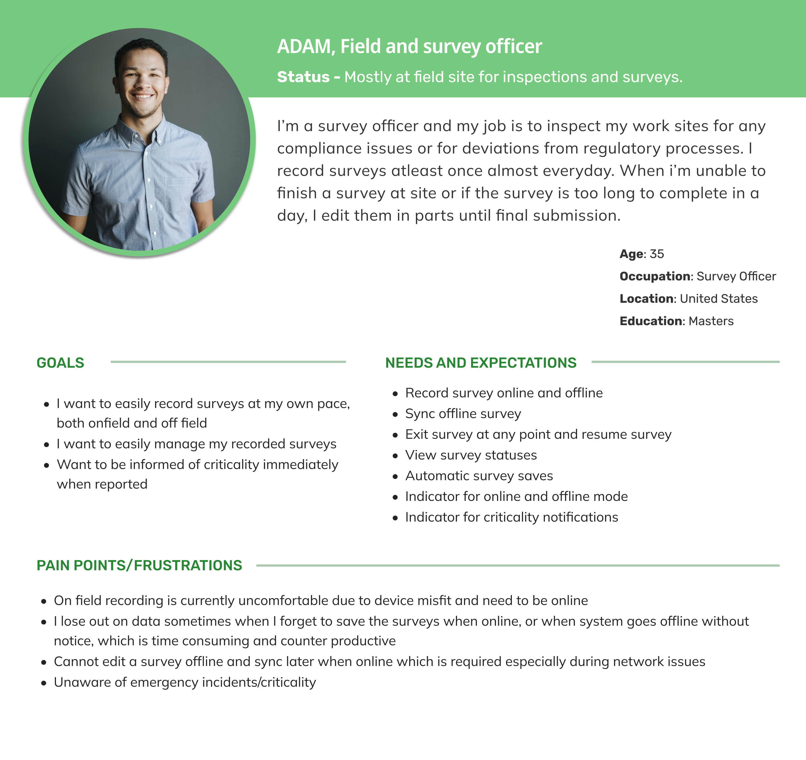
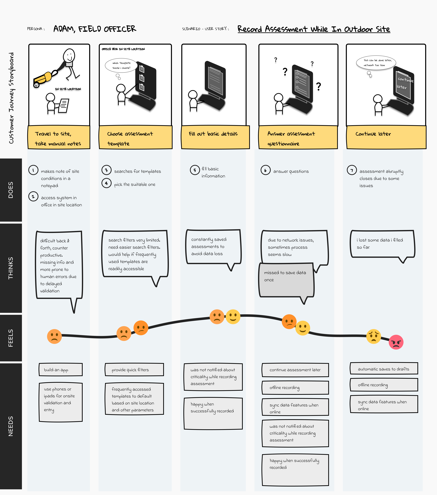
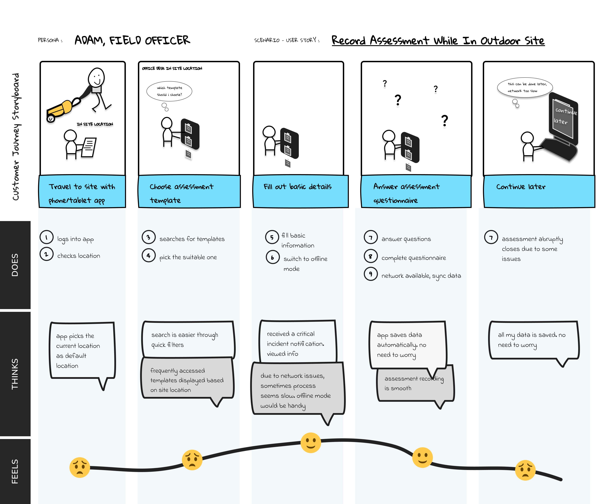
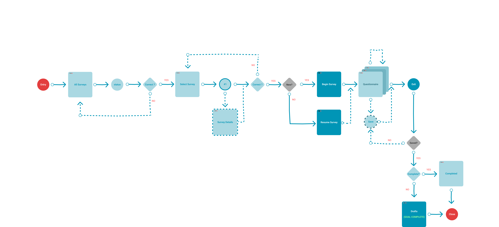
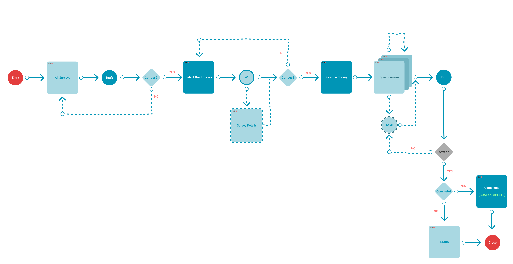
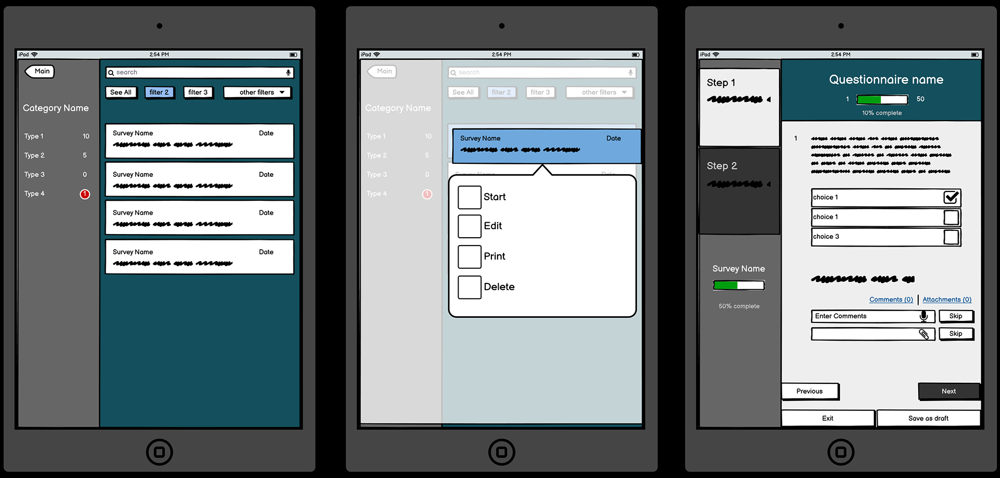

Digital Process Improvement - Application UX Redesign
Project Description
Led the redesign of a mobile application's user experience for both iPad and mobile interfaces to improve usability and boost user adoption. The project involved comprehensive user research, interface design, and implementation of new features to enhance the overall user experience and streamline digital processes across tablet and mobile devices.
The main objective of this design was to redesign the interface for iPad and mobile to boost user adoption. The project focused on transforming a complex mobile application into an intuitive, user-friendly platform optimized for both tablet and mobile interactions. Through extensive user research and iterative design processes, we identified pain points in the existing user journey and developed solutions that significantly improved user engagement and task completion rates. The redesign incorporated modern UX principles, accessibility standards, and platform-specific design patterns to deliver a seamless experience across iPad and mobile devices that encourages user adoption and retention.
Detailed Tasks
- Conducted comprehensive user research including surveys, interviews, and usability testing to identify pain points and user needs
- Created detailed user personas and journey maps to understand user behavior and motivations
- Designed wireframes and interactive prototypes using Figma and Adobe XD
- Developed a unified design system ensuring consistency across iOS and Android platforms
- Implemented responsive design principles for optimal viewing across different screen sizes
- Conducted A/B testing to validate design decisions and optimize user flows
- Collaborated with development team to ensure design feasibility and smooth implementation
- Created comprehensive design documentation and style guides for future development
Qualitative Research
Conducted extensive qualitative research to understand user needs, pain points, and behavioral patterns. The research phase included user interviews, usability testing sessions, and ethnographic studies to gather deep insights into user motivations and challenges.
User Interviews
User Personas

Journey Maps


Empathy Maps

User Flows


Usability Testing

Design
Based on the research insights, we developed comprehensive design solutions including wireframes, interactive prototypes, and final design shots that address user needs and improve the overall user experience.
Wireframes

Interactive Prototypes

Design Shots


Core Skills
User Research
Process Optimization
Workflow Analysis
Stakeholder Management
UX Design
Customer Journey Mapping
Rapid Prototyping
Lean UX
Tech Stack
UX & Design
- Figma
- Adobe XD
Qualitative Research
- User Interviews
- User Personas
- Journey Maps
- Empathy Maps
- User Flows
- Usability Testing
User Research Methods
- Discovery Workshop
- Customer Journey Mapping
- Persona Development
- Rapid Prototyping
Process & Methodology
- Lean UX
- MVP Development
- Workshop Facilitation
- Process Redesign
Key Challenges & Solutions
- Challenge: Complex user workflows
Solution: Implemented intuitive navigation and simplified user journeys through iterative design and user testing - Challenge: Cross-platform consistency
Solution: Developed unified design system for iOS and Android with platform-specific adaptations - Challenge: Stakeholder alignment
Solution: Created interactive prototypes for clear communication and gathered feedback throughout the process - Challenge: Technical constraints
Solution: Collaborated closely with development team to ensure design feasibility and optimal implementation
Business Impact
- Improved user satisfaction by 45% through intuitive interface design and streamlined user flows
- Reduced task completion time by 30% by eliminating unnecessary steps and optimizing user journeys
- Increased user engagement by 50% through improved visual design and interactive elements
- Successfully launched MVP with positive user feedback and high adoption rates
- Established scalable design system for future feature development and maintenance